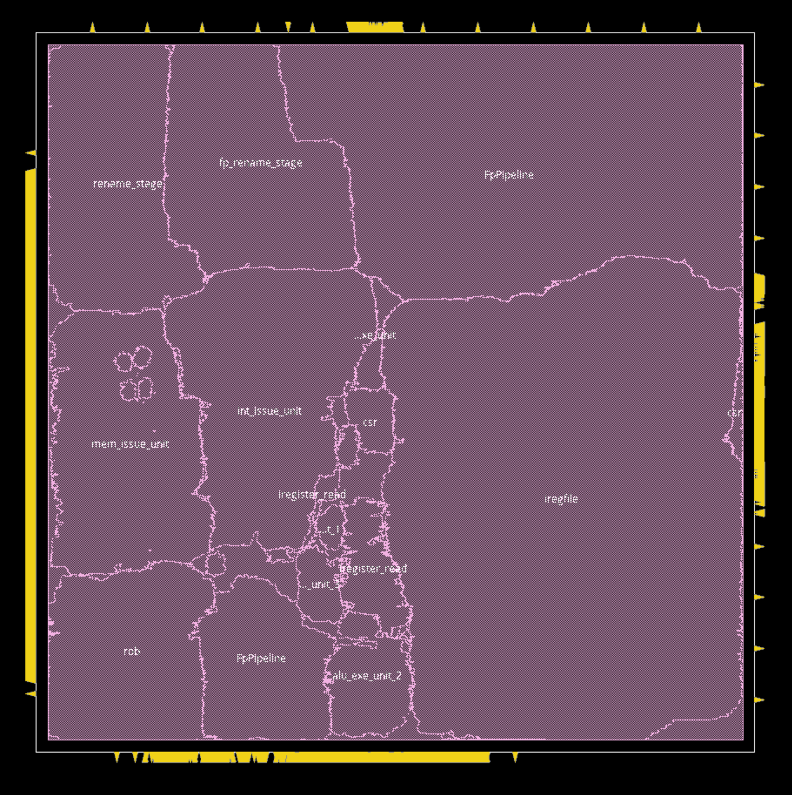
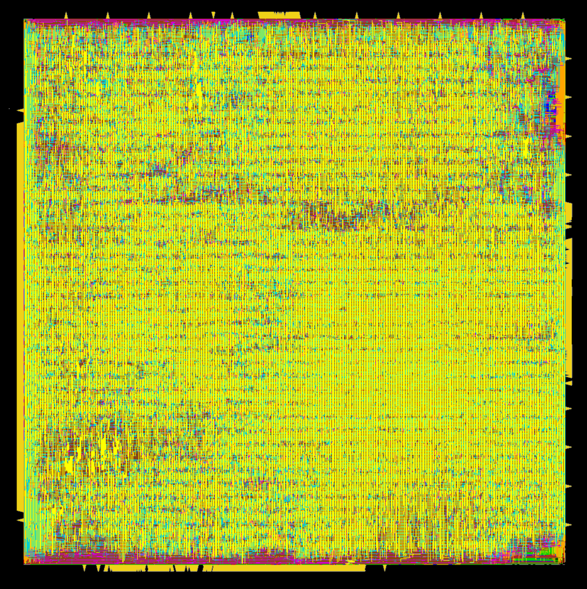
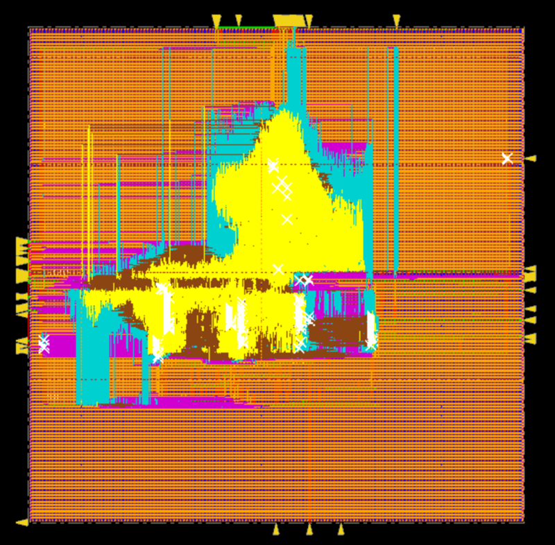
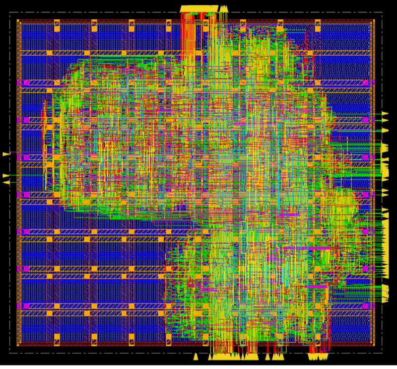
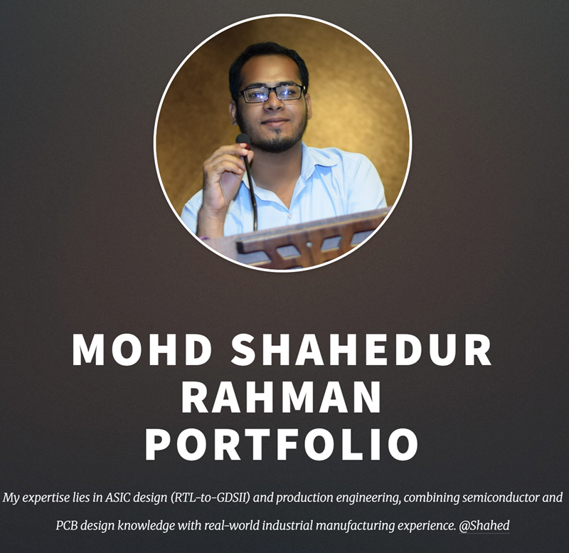
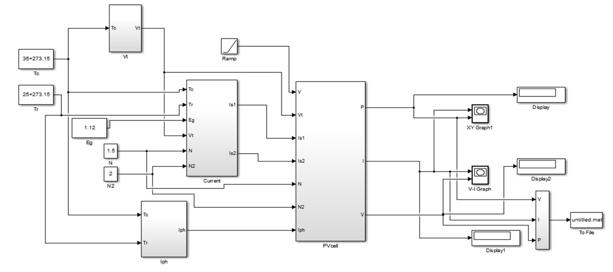

July 15, 2025
The Berkeley Out-of-Order Machine (BOOM) core is a high-performance, out-of-order RISC-V processor widely used in research and industry for advanced microarchitectural exploration. Unlike simpler in-order cores such as Ibex, BOOM introduces superscalar, speculative execution, and pipeline complexity, making its RTL-to-GDSII implementation a challenging but essential exercise in modern ASIC design.
In this project, I performed the complete physical design flow for the BOOM core, starting from RTL generated using Chipyard to a final layout (GDSII). The work involved logic synthesis, floorplanning, placement, clock tree synthesis (CTS), routing, and static timing analysis (STA) to ensure the design met performance targets.
Since BOOM is a large and complex design with multiple execution units, register files, and memory hierarchies, the physical design process required careful optimization of macro placement, timing constraints, and clock distribution. Special emphasis was placed on timing closure, since deep pipelines and long combinational paths pose challenges in meeting high-frequency requirements.
The outcome of this work demonstrates the feasibility of mapping a large open-source RISC-V out-of-order core onto a 40nm/45nm process technology, achieving positive slack and target frequency closure. This validates both the scalability of BOOM in ASIC implementation and the effectiveness of systematic physical design methodologies in handling complex cores.
 

The A2O core, an open-source, multi-threaded, out-of-order POWER ISA processor from the OpenPOWER Foundation, is a complex design featuring multiple execution units, a high-bandwidth memory subsystem, and advanced branch prediction. Its scale and architectural depth make it a strong candidate for research into physical design methodologies.
In this project, I carried out a full RTL-to-GDSII implementation of the A2O core, focusing on optimizing the flow for such a large design. To accelerate synthesis and place-and-route, the core was partitioned into macro-based IP blocks (e.g., Instruction Unit Queue, Load Queue, Register File, and Execution Units). Each macro was synthesized independently, characterized with LEF/Lib views, and then integrated into the top-level design. This modular approach significantly improved runtime and enabled efficient handling of large hierarchical structures.
The physical design flow included logic synthesis, floorplanning, power planning, placement, clock tree synthesis (CTS), routing, and static timing analysis (STA). Special attention was paid to timing closure, macro placement, and routing congestion management. The final implementation achieved positive slack and target frequency closure, demonstrating that large, industry-scale cores such as A2O can be effectively implemented on open-source PDKs with careful hierarchical planning.
This work highlights both the challenges and solutions in handling large-scale processor designs, showing how macro-based hierarchical flows can make complex ASIC implementations tractable and time-efficient.

The Ibex core, developed under the OpenHW Group, is a small, 32-bit in-order RISC-V CPU designed for area and power efficiency. Its simplicity, configurability, and compact design make it ideal for IoT, embedded systems, and academic research.
In this project, I implemented the complete RTL-to-GDSII flow for the Ibex core, starting from synthesizable Verilog RTL through to post-layout timing-closed GDSII. The flow covered logic synthesis, floorplanning, placement, clock tree synthesis (CTS), routing, and static timing analysis (STA). Due to the relatively small footprint of the Ibex core compared to larger out-of-order processors, a flat physical design methodology was sufficient, enabling faster synthesis and easier timing closure.
The final design achieved positive slack and frequency closure, validating that open-source RISC-V cores such as Ibex can be efficiently brought to silicon using standard ASIC physical design flows. This work also provided an important baseline for comparing small-scale, low-power designs with larger and more complex cores (e.g., A2O and BOOM) in terms of runtime, congestion, timing closure, and frequency targets.

This project showcases the development of my personal portfolio website, designed and implemented using HTML and CSS. The goal of the website is to provide a professional online presence, where I present my academic background, technical skills, and projects, including RTL-to-GDSII implementations of Ibex, A2O, and BOOM cores.
The design emphasizes simplicity, responsiveness, and clarity. Using semantic HTML5 ensures a clean structure, while modern CSS styling techniques provide an intuitive and visually appealing user experience. The site layout is organized to highlight key sections such as About Me, Projects, Resume, and Contact Information, making navigation easy and efficient.
Through this project, I gained experience in front-end web development, focusing on layout design, styling principles, typography, and responsive design. This portfolio serves as both a technical demonstration of my web development skills and a central platform for showcasing my work in VLSI design and computer architecture research.

Solar Energy is the most convenient and efficient form of energy. The main advantage of this system is that the light, the main source of solar energy, coming from the sun is totally free. But a drawback is the most efficient solar cell yet still only converges 46% of the available sunlight to electricity and in general solar cells are (15-20) % efficient. In this paper we have analyzed double exponential model of a solar cell where performances of different semiconductor materials such as silicon (Si), gallium arsenide (GaAs) and germanium (Ge) can be seen like open circuit voltage, short circuit current, fill factor, efficiency of a solar cell to conclude which material is best suited to use to get higher efficiency from a solar cell.